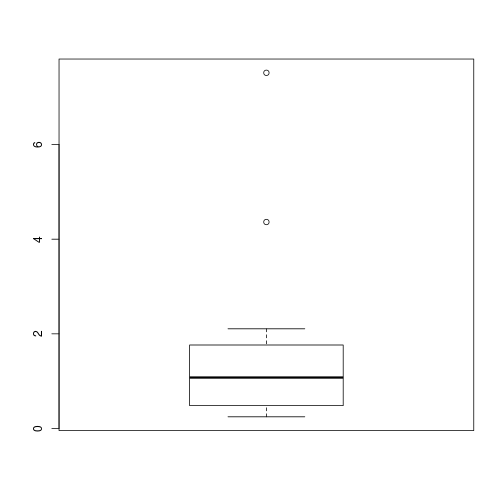
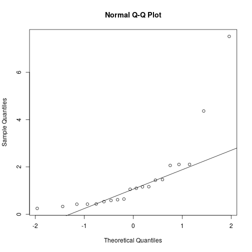
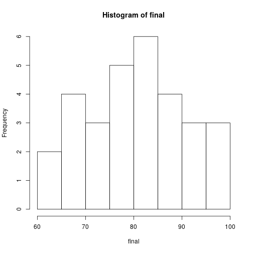
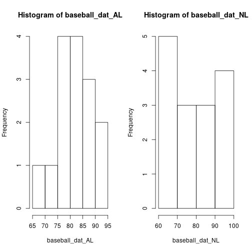
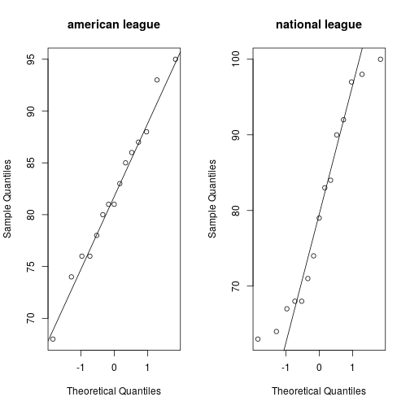
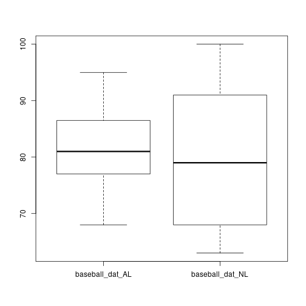
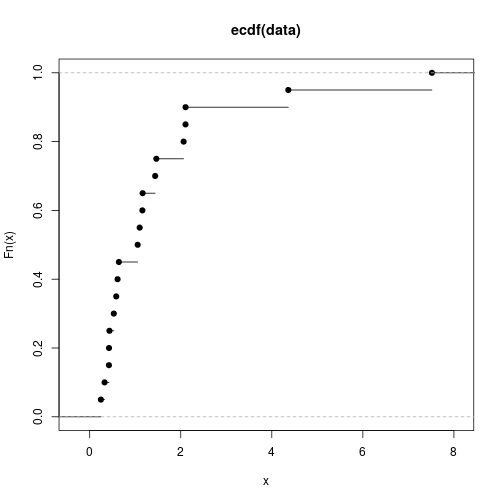
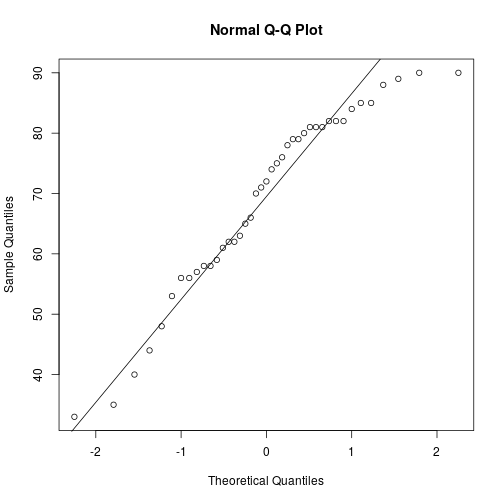
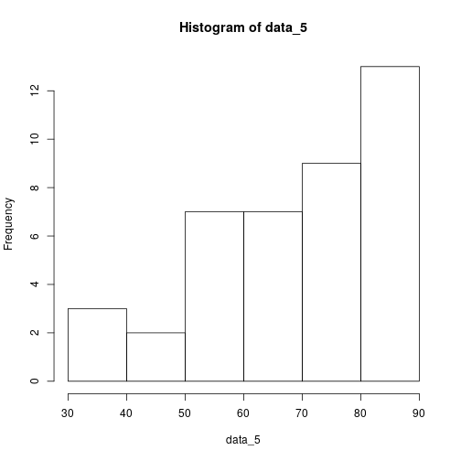

x = scan("http://pages.iu.edu/~mtrosset/StatInfeR/Data/sample774.dat")
x_ecdf <- ecdf(x)
plot(x_ecdf)
x_mean <- mean(x)
x_var <- var(x)
x_mean
## [1] 1.4876
x_var
## [1] 2.934267
x_median <- median(x)
x_median
## [1] 1.076
IQR <- IQR(x)
x_IQR_to_sd <- IQR/sqrt(x_var)
boxplot(x)

qqnorm(x)
qqline(x)

baseball_dat_AL <- c(93, 87, 81, 80, 78, 95, 83, 81, 76, 74, 88, 86, 85, 76, 68)
baseball_dat_NL <- c(90, 83, 71, 67, 63, 100, 98, 97, 68, 64, 92, 84, 79, 74, 68)
final <- cbind(baseball_dat_AL, baseball_dat_NL)
boxplot(final)

hist(final)

par(mfrow=c(1,2))
hist(baseball_dat_AL)
hist(baseball_dat_NL)

median(baseball_dat_AL)
## [1] 81
median(baseball_dat_NL)
## [1] 79
From the histograms it can be seen that the National league data has a bimodal distribution and american league has a unimodal distribution.
par(mfrow=c(1,2))
qqnorm(baseball_dat_AL, main='american league')
qqline(baseball_dat_AL)
qqnorm(baseball_dat_NL, main='national league')
qqline(baseball_dat_NL)
 The QQ plots of both the data is shown above. American league data looks quite close to a normal distribution. All it's points lie close to a straight line.
data <- scan("http://pages.iu.edu/~mtrosset/StatInfeR/Data/sample774.dat")
data_ecdf <- ecdf(data)
plot(data_ecdf)

data_mean <- mean(data)
data_var <- var(data)
data_median <- media(data)
## Error in media(data): could not find function "media"
IQR <- IQR(data)
sqrt_var <- sqrt(data_var)
sqrt_var
## [1] 1.71297
IQR
## [1] 1.10775
normal_IQR <- qnorm(0.75, m=data_mean, sd=sqrt_var) - qnorm(0.25, m=data_mean, sd=sqrt_var)
qqnorm(data)
qqline(data)
As seen in the Q-Q plot the data doesn't look like it's taken from a normally distributed data population. The data doesn't lie on a straight line on the QQ plot.
data_y <- log(x)
par(mfrow=c(1,3))
hist(data_y)
plot(data_y)
qqnorm(data_y)
qqline(data_y)
 You can see from the given Q-Q plot that the points don't lie along a straight line. Also the histogram looks a little skewed to the left. Thus the distribution is not normally distributed.
#4
data_5 <- scan("http://pages.iu.edu/~mtrosset/StatInfeR/Data/test351.dat")
qqnorm(data_5)
qqline(data_5)

hist(data_5)
